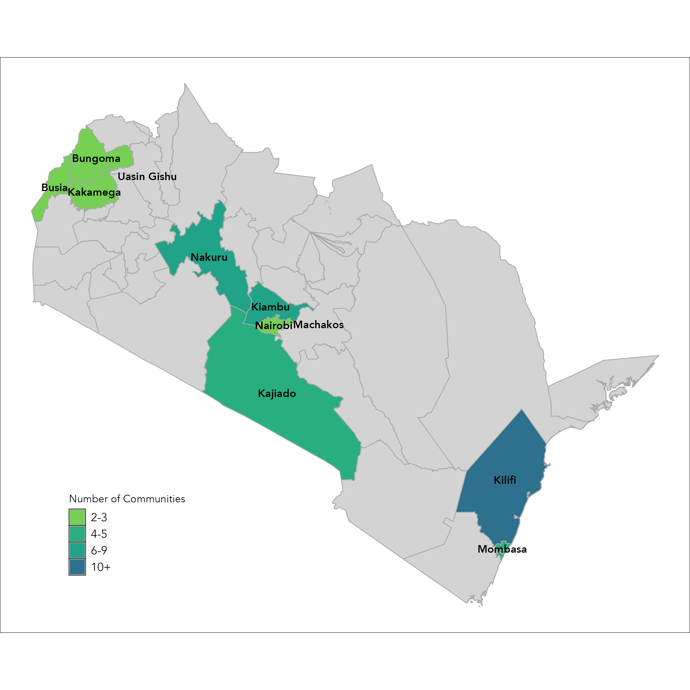

Research Questions
Primary Hypotheses
- HA1 The social franchising model will improve daycare quality, as measured by hygiene & safety, toys & manipulatives, and child experience indices.
- HA2 The social franchising model will increase provider revenue.
- HA3 The social franchising model will increase the number of child-days served.
Secondary Hypotheses
- HB1 Spillover effects onto competing providers, measured by market entry, exit, and total children in care.
- HB2 The social franchising model will increase provider profits.
- HB3 The social franchising model will increase provider agency and pride in the profession.
- HB4 The social franchising model will increase household usage of childcare (extensive and intensive margins).
- HB5 The social franchising model will increase maternal employment and household earnings.
Research Design
Cluster randomized controlled trial. We randomize the entry of our partner organization into 51 communities across 11 counties and assess impacts on both the supply and demand for daycare.
| Parameter | Detail |
|---|---|
| Design | Cluster RCT (community-level randomization) |
| Firm census | 978 daycare providers across 51 communities in 11 counties |
| Household sample | 2,820 households with children ages 0–4 |
| Treatment | 525 firms in treatment communities; 453 in control |
| Data collection | Baseline (2024), phone survey, midline (2025), endline (2026) |
| Pre-registration | AEARCTR-0011747 |



Key Findings
Midline results (~12 months post-intervention). Endline data collection is ongoing.
Franchised providers showed meaningful improvements in hygiene, safety, and the quality of children's experience.
Treatment communities saw substantially fewer daycare closures, supporting provider sustainability.
Despite quality gains, prices and revenues have not yet responded. A key question for endline.
Labor supply, child development, and household wellbeing to be assessed at endline.
Source: G²LM|LIC Policy Brief No. 82 (December 2025)
Publications
- Beam, E., Fitzpatrick, A., & Reimão, M.E. (2025). "Improving Childcare Quality through Social Franchising." G²LM|LIC Policy Brief No. 82. Released [PDF]
- Beam, E., Fitzpatrick, A., & Reimão, M.E. (2026). "Child Development Measurement Protocol for the QuiCK Study." BMJ Open, 16(3), e112224. Published [Link]
- Beam, E., Fitzpatrick, A., & Reimão, M.E. "Improving Childcare Quality through Social Franchising: A Pre-Results Review Report Proposal." Submitted to Journal of Development Economics. Under Review [PDF]